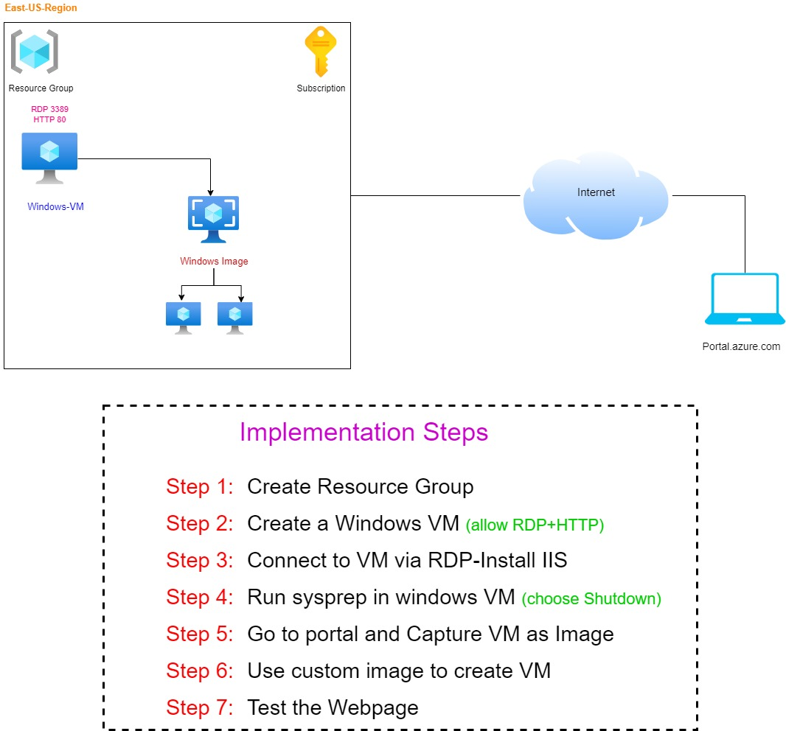
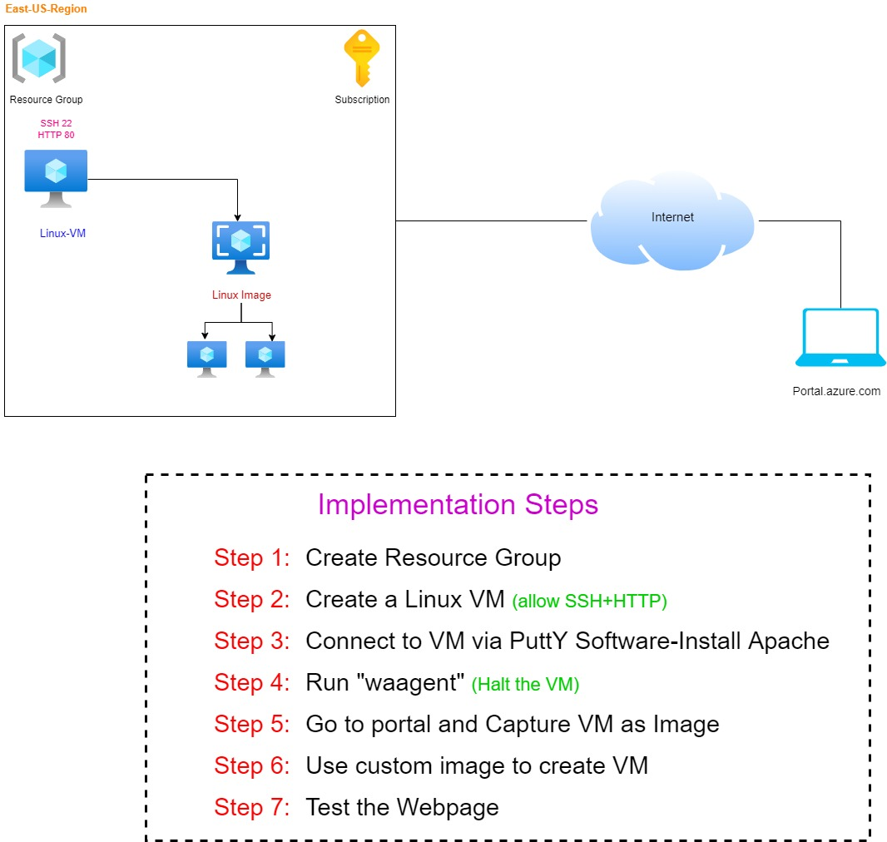
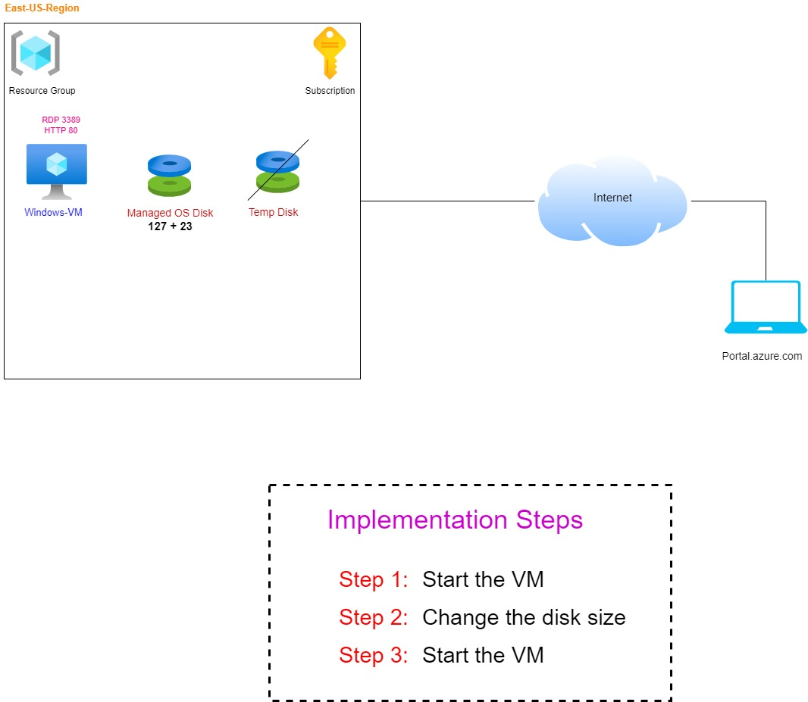

Architectures
My Architectures
1. Create a Resource Group and Tags
2. Create a Vnet with public and private Subnet
3. Create a Linux VM and install with Web server
4. Create a windows VM and Capture VM as image

5. Create a Linux VM and Capture VM as image

6. Increase OS disk size of VM

7.Add a data disk of existing VM
8.Take a snapshot of Data Disk
9. Create a Disk Using Snapshot
10. Create a Storage account and VM with unmanaged Disk
11. Create a additonal disk of vm using snapshot
12. Creating and uploading local vhd to storage account
13.Azure Storage Account with Fileshare
14.Azure Storage Account with Fileshare
15.Download and Install the Storage Explorer
16.Access blob container in Storage Account
17.Build a Static WEbsite in storage Account
18.Implements CDN profiles
19.Azure Storage Account with Fileshare
20.Synchronize local files to azure files using File sync
21.Create Vnet and Subnet
22.How to add secondary NIC to VM
23.DNS name resolution